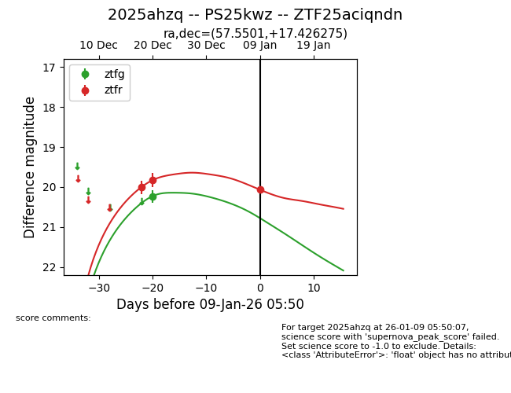
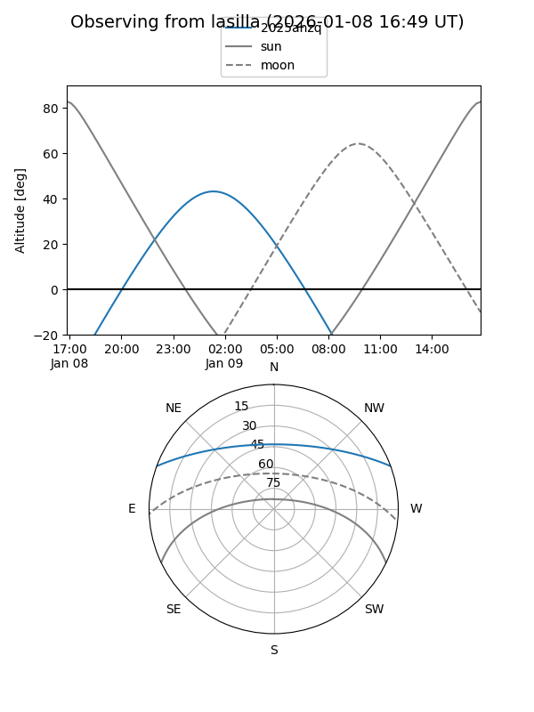
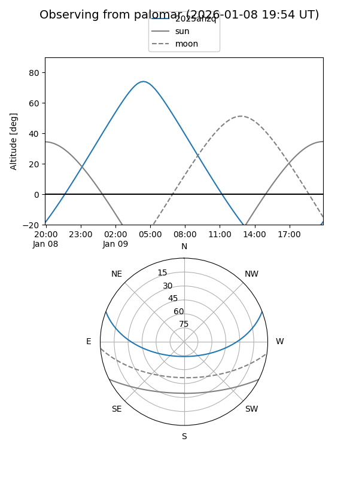
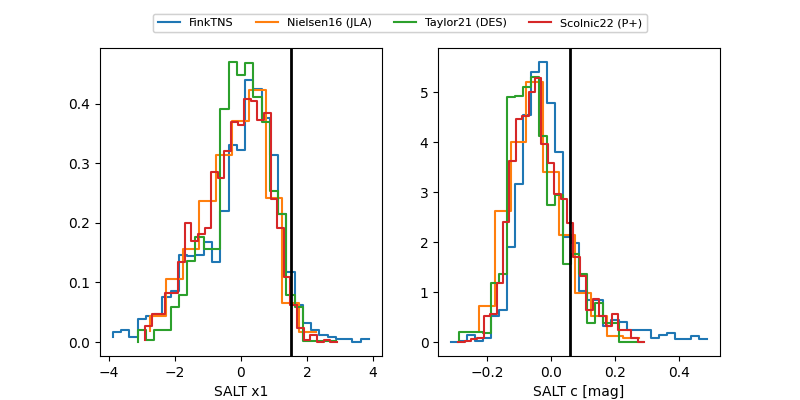

2025ahzq
Target 2025ahzq at 2026-01-09 05:50
Aliases and brokers:
FINK:
Lasair:
ALeRCE:
TNS:
YSE:
alt names
ZTF25aciqndn (ztf,fink_ztf)
2025ahzq (tns,yse)
PS25kwz (panstarrs)
Coordinates:
equatorial (ra, dec) = 57.5501,+17.42628
equatorial (HMS+DMS) = 03:50:12.01,+17:25:34.59
galactic (l, b) = (172.2973,-27.84683)
Flags:
Photometry:
last ztfg=20.23, ztfr=20.07
1 ztfg, 3 ztfr detections
Lightcurve

Visibility


Additional plots
